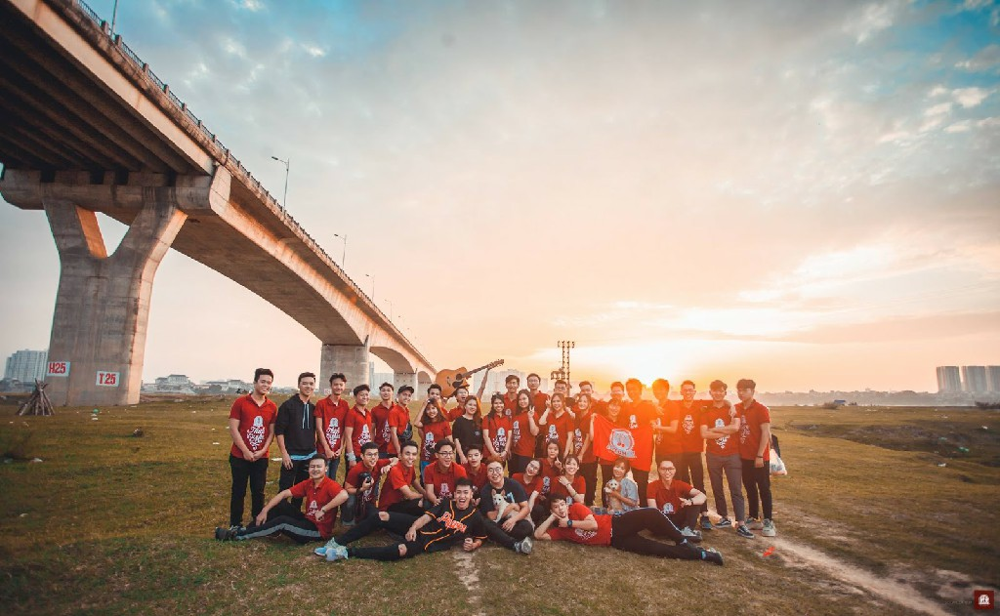
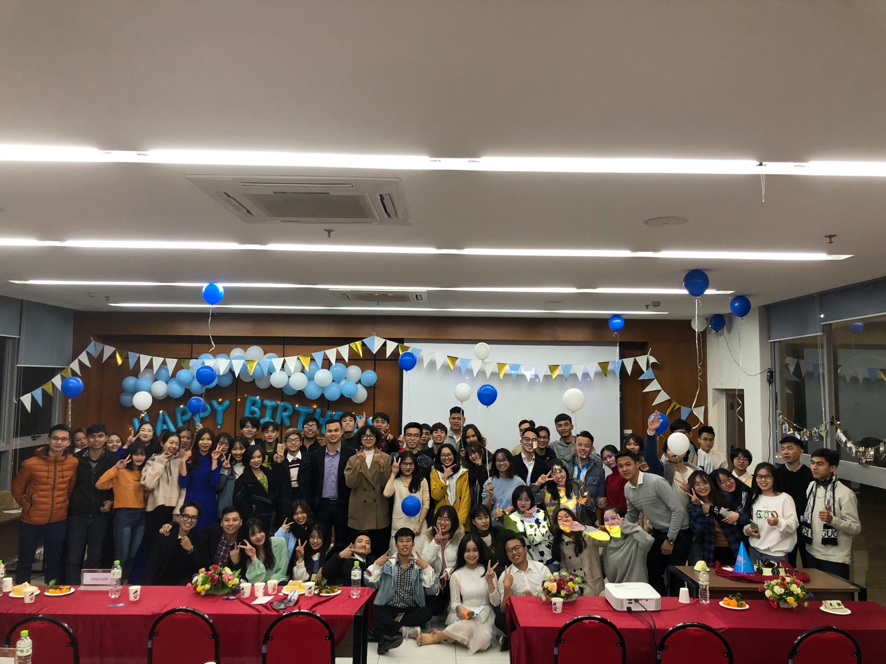
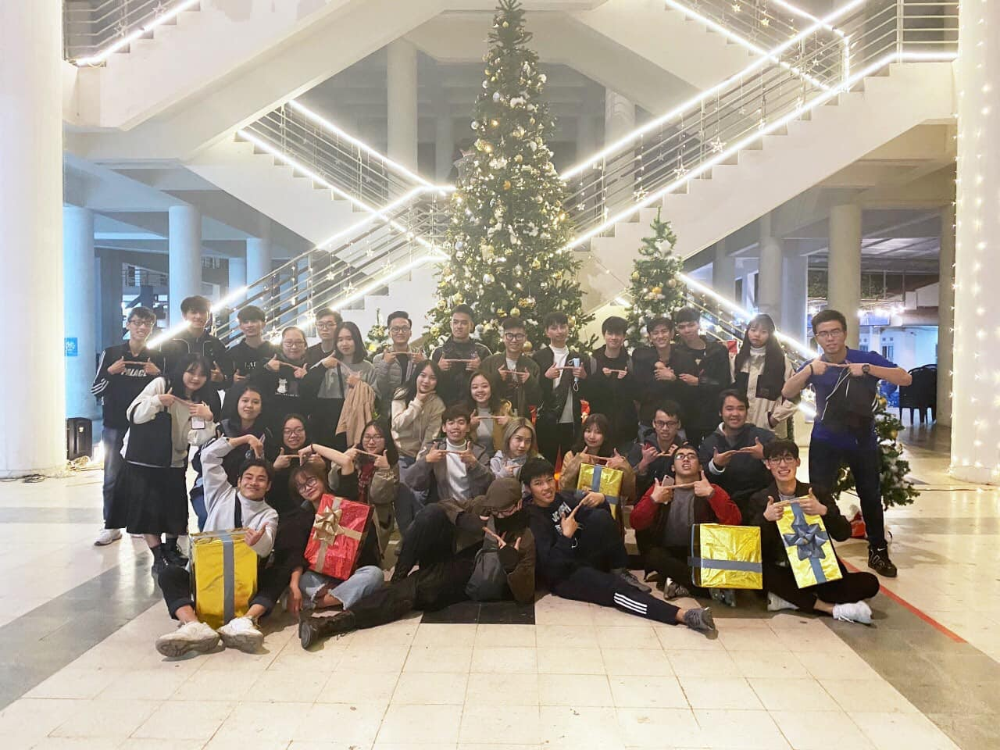
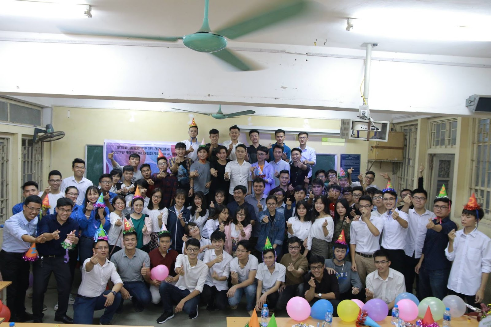
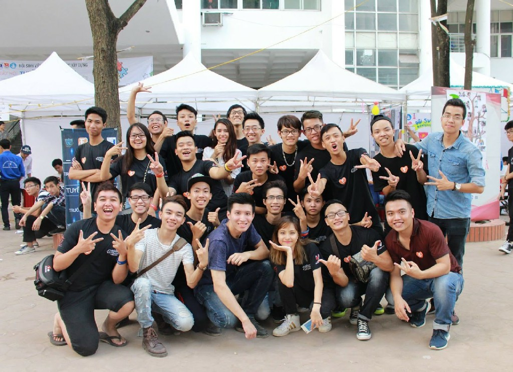
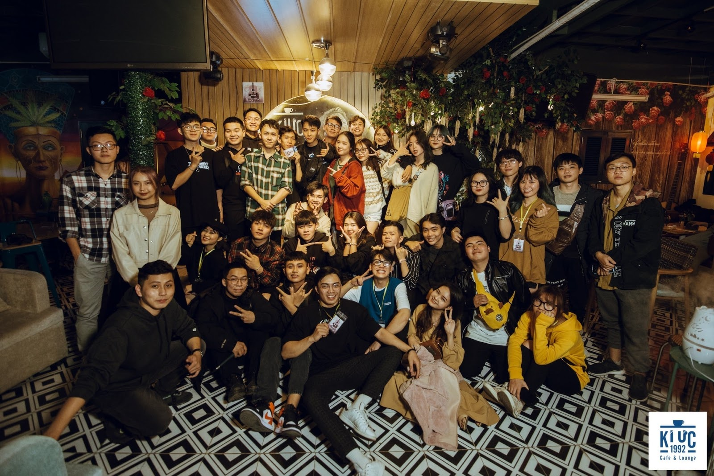
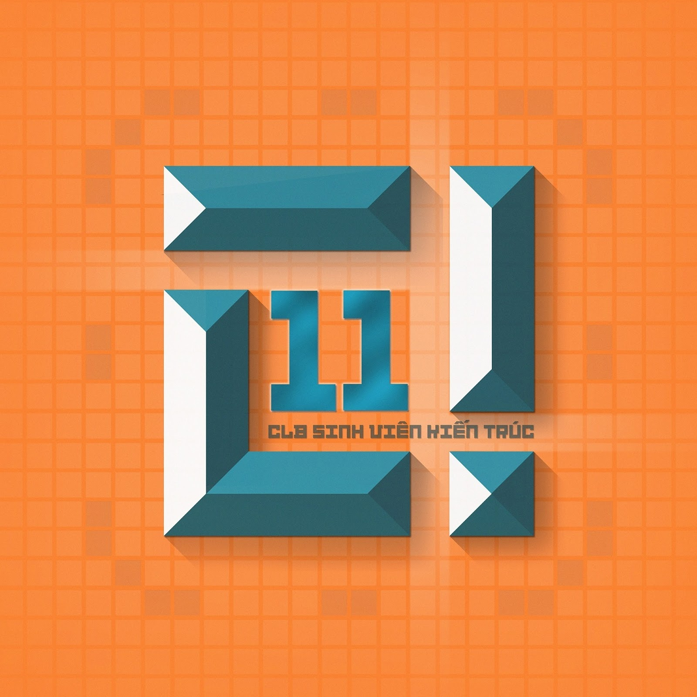
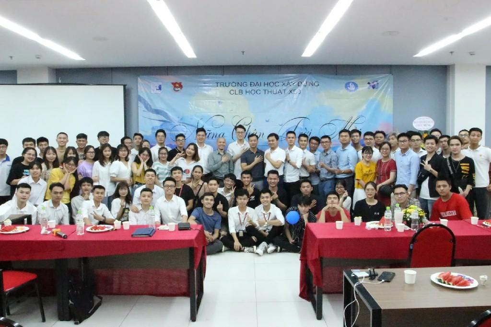
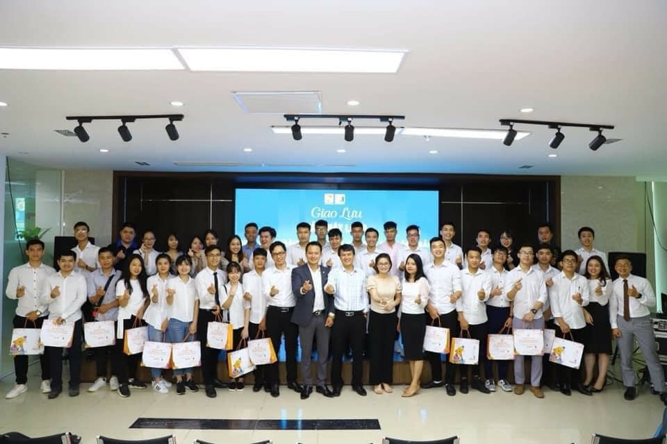
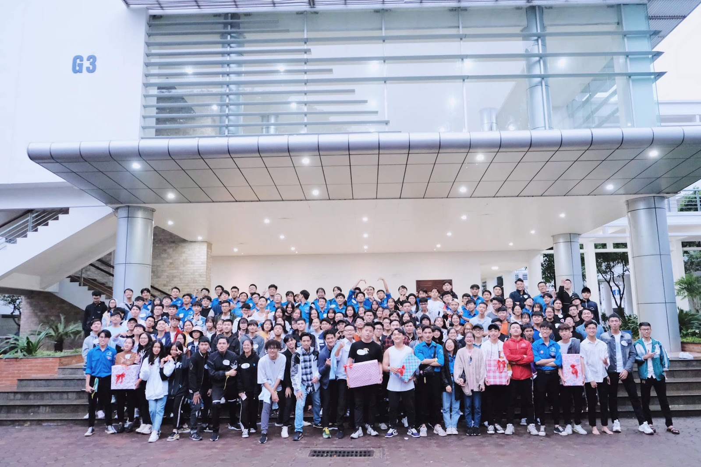

Dưới đây là một số CLB nổi bật của trường: mỗi học sinh khi đến với môi trường đại học, ngoài việc cập nhật kiến thức đầy đủ thì nên dành thời gian đăng ký tham gia các CLB.
Điều này không chỉ giúp giao lưu kết bạn, học hỏi,
nâng cao trình độ học vấn thì còn phát triển kỹ năng cần thiết cho ngành nghề.
1. CLB Âm nhạc TCM
Nếu bạn yêu thích âm nhạc, đam mê sân khấu, muốn thể hiện bản thân thì đây chính là nơi bạn không thể bỏ qua.
Facebook: CLB Âm Nhạc TCM Đại học Xây Dựng 2. CLB Kỹ sư Kinh tế CEM - EEC
CLB hoạt động chuyên môn trong lĩnh vực Kinh tế Xây dựng, KT&QL Đô thị, KT&QL Bất động sản. Bên cạnh việc nghiên cứu sâu về học thuật thì bạn có cơ hội được giao lưu rèn luyện các kỹ năng cần thiết trong công việc.
Facebook: Câu lạc bộ Kỹ sư Kinh tế CEM - EEC 3. CLB Kỹ năng mềm TPE
Với slogan “Yes I can” cùng tầm nhìn, sứ mệnh được đặt ra một cách rõ ràng thì TPE hứa hẹn sẽ đem đến những điều mà bạn không thể thiếu trong cuộc sống nếu muốn được nâng tầm bản thân.
Facebook: CLB Kỹ năng mềm Đại học Xây dựng TPE 4. CLB Tiếng Anh chuyên ngành xây dựng SPEC
Là CLB học tập cho chuyên ngành xây dựng nhưng SPEC còn có tổ chức các hoạt động ngoại khóa cực kỳ hấp dẫn đó nha.
Facebook: SPEC-Society of Professional English for Construction 5. CLB Thể thao điện tử BTC
Nơi giao lưu kết bạn với những người có cùng niềm yêu thích Esports.
Facebook: CLB Thể Thao Điện Tử BTC Đại Học Xây Dựng 6. CLB Guitar
Cũng như những trường đại học khác, Guitar là CLB tụ hợp những thành viên có đam mê cho bộ môn cùng nhau trao đổi, rèn luyện, vui chơi.
Facebook: CLB Guitar Đại Học Xây Dựng 7. CLB Sinh viên Kiến Trúc
CLB thành lập với mục đích tạo môi trường mới và năng động cho các bạn sinh viên yêu thích ngành Kiến Trúc.
Facebook: CLB Sinh viên Kiến Trúc 8. CLB Học thuật X50
CLB tạo điều kiện cho các thành viên có cơ hội giao lưu học hỏi, vận dụng lý thuyết vào thực tiễn, tăng khả năng thực hành, rèn luyện các kỹ năng cần thiết để trở thành kỹ sư có trình độ cao.
Facebook: CLB Học thuật X50 - ĐHXD 9. CLB KT&QL Bất động sản REMC
CLB hoạt động dựa trên nguyên tắc tự nguyện, dân chủ, bình đẳng, biểu quyết theo đa số; nơi tụ họp các bạn yêu thích bất động sản.
Facebook: Câu Lạc Bộ KT&QL Bất Động Sản Đại học Xây Dựng - REMC 10. Đội Sinh viên tình nguyện trường
Nơi mà các bạn sinh viên luôn có mong muốn được tham gia các hoạt động tình nguyện, giúp ích cho xã hội bằng sự nhiệt tình, nhiệt huyết của tuổi trẻ.
Facebook: Đội Sinh Viên Tình Nguyện Trường Đại Học Xây Dựng Ngoài ra, trường có những khoa liên quan chặt chẽ đến chuyên ngành mà khi các bạn tham gia học tại trường có thể tìm hiểu và đăng ký để trau dồi kiến thức: Khoa Xây dựng DD&CN; Khoa Kinh tế và Quản lý xây dựng; Bộ môn Kiến trúc dân dụng; Khoa Công trình thủy; Chuyên ngành nội thất ...
Đăng bởi Ngoc Duc
tham khảo thông tin từ
nuce.edu.vn
.